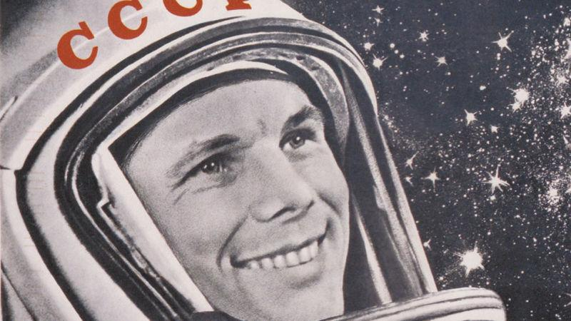
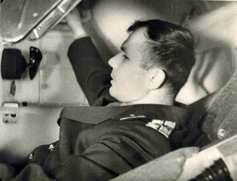

Как когда-то сказал Юрий Алексеевич Гагарин - "Поехали"!
Нажав на кнопку старта, все управление запуском сосредоточено в руках ракетчиков.
ГАГАРИН. ПОЕХАЛИ! КАК ЭТО БЫЛО (фантомные отступы + opacity)
В начале 1959 г. в Академии наук СССР узкий круг осведомленных людей обсуждал возможность полёта человека в космос. К тому времени у СССР уже был успешный опыт запусков искусственных спутников, а значит, была и надежда. Начали появляться постановления Правительства, где были прописаны задачи по подготовке полёта человека в космическое пространство. Для нас важен документ, который стал основой для деятельности тех, кого в соответствии с ним стали называть космонавтами. Это – Приказ Главкома ВВС №267, в соответствии с которым на должность слушателей-космонавтов были зачислены первые 12 лётчиков-истребителей: Аникеев И.Н., Быковский В.Ф., Волынов Б.В., Гагарин Ю.А., Горбатко В.В., Комаров В.М., Леонов А.А., Нелюбов Г.Г., Николаев А.Г., Попович П.Р., Титов Г.С., Шонин Г.С. В начале июля того же года отряд был сформирован окончательно. В него были включены дополнительно Беляев П.И., Бондаренко В.В., Варламов В.С., Заикин Д.А., Карташов А.Я., Рафиков М.З., Филатьев В.И. и Хрунов Е.В.
Первую двадцатку спустя многие годы так и будут называть – гагаринский отряд. Но это случится много позже. Приказ вышел в свет 7 марта 1960 г.; именно это день и стал официальной датой создания Отряда космонавтов. В первых числах марта кандидаты в космонавты начали прибывать в Москву. Местом их временного проживания стал Центральный аэродром им. М.В. Фрунзе. В этом тоже была некая символика – раньше аэродром назывался Ходынским полем, над которым в начале ХХ века парили первые лётчики России. Двухэтажное здание спортивной базы ЦСКА стало их временным домом и местом для первых занятий.
14 марта 1960 г., в 9.00 по московскому времени у будущих космонавтов начались теоретические занятия. До первого полёта человека в космос остаётся еще чуть больше года. Объём знаний и умений, которые должны были получить будущие космонавты, был огромен. И расслабляться было некогда. Им читали лекции по авиационной и космической медицине, по ракетной технике и динамике полёта, по конструкции космического корабля и его многочисленным системам, и ещё по многим узкоспециальным дисциплинам. Примерно в середине апреля первые 11 человек были откомандированы в г. Энгельс Саратовской области, где приступили к парашютным тренировкам. Чуть позже к ним присоединились ещё двое. Парашютные занятия с прыжками самой разной сложности продолжались целый месяц.
По возвращении в Москву их ждали тренировки в барокамере, термокамере, сурдокамере, на центрифуге, вибростенде, полёты на невесомость, регулярные спортивные занятия, продолжение теоретических занятий по различным дисциплинам. Примерно тогда же первая двадцатка познакомилась с тем, кто возглавлял огромный коллектив, кто проектировал, создавал и готовил для них космические корабли. На одно из занятий в Москву приехал С.П. Королёв. Первая встреча была короткой, Сергей Павлович говорил с будущими космонавтами мало, больше всматривался в них, как будто выбирая того, кто станет первым. Но вот и пришло время приступить к тому, что у лётчиков называется предполётной подготовкой. От традиционной она отличалась тем, что занимала весьма длительное время - почти 6 месяцев. За полгода надо было досконально изучить космический корабль и то, как функционируют все его системы. Корабль надо было освоить до такой степени, чтобы он для будущего космонавта стал родным домом. Спустя примерно полгода, если быть точным – 11 октября 1960 г. – новым Приказом Главкома ВВС №176 была определена группа из шести лётчиков, которые должны были начать заниматься по ускоренной программе. В октябре 1960 г. они приступают к занятиям на тренажёре космического корабля «Восток» в лётно-исследовательском институте подмосковного города Жуковского.
Visibility:hidden; действует на нижний блок (его не видно)
По возвращении в Москву их ждали тренировки в барокамере, термокамере, сурдокамере, на центрифуге, вибростенде, полёты на невесомость, регулярные спортивные занятия, продолжение теоретических занятий по различным дисциплинам. Примерно тогда же первая двадцатка познакомилась с тем, кто возглавлял огромный коллектив, кто проектировал, создавал и готовил для них космические корабли. На одно из занятий в Москву приехал С.П. Королёв. Первая встреча была короткой, Сергей Павлович говорил с будущими космонавтами мало, больше всматривался в них, как будто выбирая того, кто станет первым. Но вот и пришло время приступить к тому, что у лётчиков называется предполётной подготовкой. От традиционной она отличалась тем, что занимала весьма длительное время - почти 6 месяцев. За полгода надо было досконально изучить космический корабль и то, как функционируют все его системы. Корабль надо было освоить до такой степени, чтобы он для будущего космонавта стал родным домом. Спустя примерно полгода, если быть точным – 11 октября 1960 г. – новым Приказом Главкома ВВС №176 была определена группа из шести лётчиков, которые должны были начать заниматься по ускоренной программе. В октябре 1960 г. они приступают к занятиям на тренажёре космического корабля «Восток» в лётно-исследовательском институте подмосковного города Жуковского.
scroll
25 марта 1961 г. на космодроме должен был состояться ещё один пуск ракеты-носителя с космическим кораблём. В этот раз его пассажирами были собаки Звёздочка и Чернушка. И этот полёт стал удачным. Всем уже было понятно: первый старт человека в космос наступит совсем скоро. 18 марта 1961 года в монтажно-испытательный корпус прибыла группа во главе с Героем Советского Союза генералом Н.П. Каманиным, руководителем центра подготовки космонавтов, Е.А. Карповым, специалистом в области авиационной медицины и генералом Л.И. Гореглядом. В тот день ведущий конструктор О.Г. Ивановский давал пояснения и отвечал на вопросы о космическом аппарате («Салют»). Среди слушателей были Григорий Нелюбов, Герман Титов, Юрий Гагарин, Андриян Николаев, Валерий Быковский, Павел Попович. 20 марта в одной из лабораторий монтажно-испытательного корпуса будущие космонавты провели тренировку по надеванию и регулировке скафандра под руководством ведущего конструктора О.Г. Ивановского и ведущих специалистов по скафандру: Ф.А. Востокова и В.И. Сверщека. Мало кто знал в то время, что к данному моменту было изготовлено всего только три индивидуальных скафандра: для Юрия Гагарина, Григория Нелюбова и Германа Титова.
К 21 марта космический аппарат был полностью подготовлен для стыковки с ракетой. После 17:00 местного времени, когда основная часть личного состава покинула монтажно-испытательный корпус, на площадке, где находился космический аппарат, появились Юрий Гагарин, Григорий Нелюбов и Герман Титов в сопровождении технического руководства и специалистов для проведения тренировки в надевании скафандра, посадке в скафандрах в кабину космического корабля, проверке скафандров и средств связи. Надевание скафандра занимало не более 20-25 минут, а посадка в кабину спускаемого аппарата и проверка оборудования на функционирование – 15-25 минут. Руководили этими включениями с подачей бортового питания на некоторые системы космического аппарата В.И. Ярополов и В.Я. Хильченко.
2 марта в первой половине дня Главный конструктор наземного испытательного комплекса В.П. Бармин вместе со своим заместителем Б.М. Хлебниковым провели ознакомительную экскурсию с космонавтами по стартовому комплексу.
23 марта Главный конструктор СКБ ЛИИ С.Г. Даревский провел с группой космонавтов занятия по коррекции глобуса на пульте пилота. Занятия прошли в лаборатории на первом этаже монтажно-испытательного корпуса.
24 марта в 13:00 ракету с космическим аппаратом и манекеном в кресле пилота вывезли на стартовую позицию и под руководством В.А. Романенко установили в стартовое сооружение. К 18:00 Юрий Гагарин и Герман Титов с помощью специалистов облачились в скафандры и в специальном голубом автобусе ЛАЗе прибыли на стартовую позицию. С помощью ведущего конструктора и испытателей В.Я. Хильченко, а также В.А. Холина, отвечающего за установщик и лифт, космонавты провели тренировку по подъему на лифте к космическому аппарату и прохождению пути от лифта на верхней площадке установщика к люку спускаемого аппарата. Гагарин в присутствии С.П. Королева проверил, насколько удобно будет садиться в спускаемый аппарат. Затем сошел на две ступеньки вниз с приставочной площадки и Королев повел его вокруг обтекателя. Затем Титов выполнил те же операции, что и Гагарин. Далее они все спустились на нулевую отметку стартового комплекса и вернулись в автобус.
открыть(:target)
25 марта в 6:30 М.В. Келдыш провел короткое заседание членов Государственной комиссии перед стартом космического корабля ЗКА №2. За час до старта Королеву доложили, что один из датчиков на третьей ступени ракеты-носителя вышел из строя. Главный конструктор блока «Е» С.А. Косберг, посоветовавшись со своими специалистами, дает указание отключить данный датчик. Специалисты первого отдела поднялись к лючку третьей ступени и отключили его. В этот же день космический аппарат ЗКА №2 с манекеном и собакой Звездочкой, кличку которой предложил Гагарин, вышел на орбиту без происшествий. На сей раз все шло строго по программе: все системы корабля функционировали нормально. Через 1,5 часа космический корабль приземлился в заданном районе.
Успешное завершение испытаний двух беспилотных космических аппаратов дало возможность С.П. Королеву и членам государственной комиссии доложить правительству, что отработка полета кораблей на орбите проводится в соответствии с утвержденной программой, и подтверждается реальная возможность осуществления первого полета человека в космическое пространство.
3 апреля 1961 года Сергей Павлович Королёв с группой специалистов вылетел на полигон. На космическом аппарате ЗКА №3 (будущем космическом корабле «Восток-1») проводились заключительные операции для стыковки с ракетой-носителем.
Background
Псевдоклассы
(first-child и first-of-type) В тот же день космонавтов Гагарина и Титова в последний раз одели в резервные скафандры, чтобы заснять на пленку, как они забираются в «Восток». Будущие покорители космоса по очереди произносили прощальные речи у подножия пусковой башни. На этих кадрах Р-7 не видна, потому что ракета лежала в сборочном ангаре, а подробности ее конструкции хранились в величайшем секрете. То была государственная тайна. Техники воспроизвели процесс запирания космонавтов в шар (это было проделано в другой зоне главного ангара, служившего для подготовки корабля, а не на самой площадке). В последующие месяцы некоторые из этих постановочных эпизодов смонтировали с короткой подлинной съемкой подготовки к старту, осуществленной оператором Владимиром Суворовым в куда менее благоприятных условиях. В тот великий день предстартовая группа просто не могла предоставить ему такой же широкий доступ к кораблю и пусковым устройствам, как при репетиции в ангаре.
nth-child(2) 6 апреля на полигон прибыл председатель Государственного комитета по оборонной технике и председатель Государственной комиссии К.Н. Руднев. После 17 часов в монтажно-испытательном корпусе на первом этаже в одной из лабораторий Юрий Гагарин и Герман Титов примеряли свои индивидуальные скафандры под руководством Главного конструктора катапультируемого кресла, скафандра и систем обеспечения жизнедеятельности космонавта – С.М. Алексеева и ведущих специалистов В.И. Сверщека и Ф.А. Востокова. 7 апреля к 10 часам в одной из лабораторий монтажно-испытательного корпуса на первом этаже были установлены приборная доска и пульт пилота с глобусом, при помощи которых космонавт мог определить точку земной поверхности, над которой находится в данный момент времени космический аппарат, и выбрать момент включения тормозной двигательной установки для приземления (в случае применения ручной системы ориентации корабля и ручного управления спуском с орбиты). Пульт пилота был расположен рядом с контрольно-проверочной аппаратурой.
(last-child и last-of-type) Юрий Гагарин и Герман Титов выполняли все необходимые операции по ручной ориентации космического аппарата, включению тормозной двигательной установки и контролю программы спуска по установленному на пульте пилота индикатору. Все необходимые операции выполнялись под контролем главного конструктора СКБ ЛИИ С.Г. Даревского, где разрабатывали пульт пилота и первый космический тренажер. Этажом выше тренировкой по специальной радиопереговорной линии наземной станции «Заря», главным конструктором которой являлся Ю.С. Быков, руководил начальник лаборатории радиосистем космических аппаратов инженер-майор Г.Д. Ракитин. Космонавты отрабатывали доклады на Землю, привыкали к своим позывным: Гагарин – «Кедр», Титов – «Орел». 8 апреля к 9:00 космонавты прибыли в монтажно-испытательный корпус для проведения тренировочных занятий в спускаемом аппарате корабля. Космический аппарат был установлен на специальной подставке, огороженной стойками с натянутой белой лентой, освещался юпитерами. Для подъема космонавта к спускаемому аппарату использовался легкий подвижный лифт.
nth-child(odd) В дверях монтажно-испытательного корпуса появились космонавты, облаченные в скафандры, в сопровождении С.П. Королева и ведущего конструктора О.Г. Ивановского. Первым должен был проводить тренировку Юрий Гагарин, а за ним – Герман Титов. Специалисты, принимавшие участие в «обживании» корабля космонавтами, заняли свои рабочие места у наземных пультов. Включение всех систем осуществлялось с наземного центрального пульта управления.
nth-child(even) В.И. Ярополов согласно программе проведения тренировки подавал команды по шлемофонной связи, а операторы определенных систем включали их на космическом аппарате, чтобы аппарат, как говорят испытатели, «дышал». Космонавты, находясь в спускаемом аппарате, следили за включением систем, выполняли различные манипуляции и отрабатывали определенные навыки по управлению космическим аппаратом.
nth-child(odd) 9 апреля на стартовой площадке в МИКе проходит напряженная работа по подготовке стартового комплекса, ракеты-носителя и космического корабля. Поздно вечером закончились заключительные операции по подготовке космического корабля к стыковке с ракетой-носителем. 10 апреля в павильоне на берегу Сырдарьи состоялась встреча участников заседания Государственной комиссии и космонавтов. Встреча была неформальной, присутствовали на ней первые шесть космонавтов и все те, кто готовил полёт первого человека в космос. Выступили с добрыми напутствиями С. П. Королёв, маршал К.С. Москаленко, председатель Госкомиссии К.Н. Руднев. Ответное слово держала первая тройка – Гагарин, Титов и Нелюбов.
nth-child(even) Вечером того же дня состоялось торжественное заседание Государственной комиссии по запуску объекта 3КА №3 (будущего космического корабля «Восток-1»). На этом заседании Госкомиссии было принято решение об осуществлении 12 апреля 1961 года первого в мире пуска ракеты и космического корабля с космонавтом на борту. Утвердили первым летчиком-космонавтом Ю.А. Гагарина, а его дублером – Г.С. Титова. В это же время проходила стыковка космического корабля с ракетой-носителем, шли заключительные операции. Космический корабль с помощью крана был медленно подведен к ракете, установлены крепежные элементы – и стыковка была закончена. Затем был установлен головной обтекатель.
Псевдоэлементы
11 (::first-line и ::first-letter) апреля под утро провели предстартовые горизонтальные испытания – проверочные электрические включения. В 5 часов 40 минут все было готово к вывозу на стартовую позицию. К этому времени прибыли С.П. Королев, его заместитель по испытаниям Л.А. Воскресенский и руководитель стартовой группой группой А.С. Кириллов. Подается команда, раздвигаются ворота МИКа и ракета-носитель с космическим кораблем медленно начинает путь по казахской земле на стартовый комплекс. Тепловоз двигается настолько медленно, что идущие рядом с ним не отрывают свои взгляды от величественной картины. Ракета с космическим кораблем «Восток-1» устанавливается в стартовое сооружение, поблескивая серебром восходящего солнца. Четко и слаженно работают стартовые расчеты. Подается напряжение на борт космического аппарата с центрального пульта управления, находящегося в бункере пультовой ракеты-носителя в левом углу. Кабина корабля освещается бортовыми светильниками. После доклада В.И. Ярополову разрешено специалистам по системам спускаемого аппарата приступить к предстартовым операциям по проверке бортовых систем космического корабля.
(::before и ::after) К 10 часам утра на стартовую позицию прибыли Н.П. Каманин, В.И. Яздовский и Ф.А. Агальцов, а в это время председатель Государственной комиссии К.Н. Руднев и С.П. Королев находились на верхнем мостике около спускаемого аппарата. Королев давал пояснения Рудневу по устройству космического аппарата «Восток-1». Затем подвел его к отверстию в ферме и объяснил, зачем его сделали. В случае возникновения нештатной ситуации на заправленной ракете или аварии ракеты во время запуска, космонавт может быть аварийно катапультирован через отверстие в головном обтекателе и ферме обслуживания. Приближается полдень, а в 13 часов должна состояться встреча космонавтов со стартовой командой (впоследствии эти встречи стали традиционными). Космонавтов, членов Государственной комиссии встретили бурной овацией. У всех было приподнятое настроение, гордились тем, что их частица труда вложена в общее дело. Ю.А. Гагарин заверил, что приложит все силы и знания для выполнения исторического полета. обходя строй стартовой команды, космонавты слышали слова пожелания успешного полета. После этого Ю.А. Гагарин с «главным» и в сопровождении ведущего конструктора направились к лифту. Дверь лифта открылась и первым вышел О.Г. Ивановский, за ним С.П. Королев и Ю.А. Гагарин. Он поднялся к спускаемому аппарату, заглянул внутрь, внимательно изучил кабину.
В делах и заботах пролетел день, вечером было решено остаться отдыхать в МИКе. Никто не мог заснуть. Все находились в ожидании предстоящего полета. 12 апреля. В эту ночь спали только оба космонавта. В четвертом часу боевой расчет прибыл на стартовую позицию, прибыл и С.П. Королев. По динамику громкой связи раздается голос А.С. Кириллова: «Всем службам полигона объявляется семичасовая готовность! Приступить к подготовке ракеты и корабля «Восток»!».